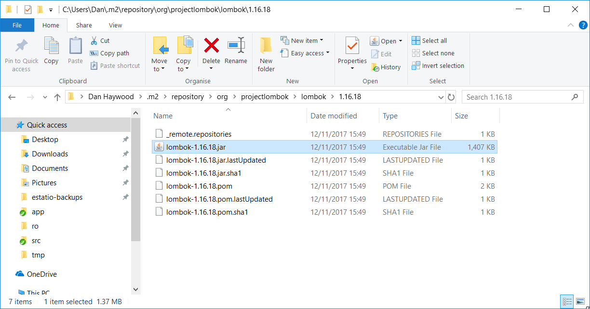

Using Eclipse
If you are an Eclipse user, then we recommend you download the "Eclipse JEE package" configuration.
| This material does not constitute an endorsement; Eclipse foundation is not affiliated to Apache Software Foundation in any way. |
Install the DataNucleus plugin
When running an Apache Isis application, it’s necessary to setup the development environment so that the Java bytecode can be enhanced by the DataNucleus enhancer.
If using Eclipse, then JDO enhancement is most easily done by installing the DataNucleus' Eclipse plugin. This hooks the bytecode enhancement of your domain objects into Eclipse’s normal incremental compilation.
This plugin needs to be configured for each of your domain modules (usually just one in any given app).
The DataNucleus plugin hooks into the Eclipse compiler and will automatically enhance the compiled class files:
-
Use Help > Install New Software:

-
Specify the DataNucleus plugin repository:
-
Select the plugin

-
Press Next and Finish to complete the installation of the plugin
Then restart Eclipse
Install Project Lombok
The SimpleApp starter app uses Project Lombok annotations (@Getter and @Setter and so on) to reduce the boilerplate.
For Eclipse IDE this requires an installation step:
-
Locate the
lombok.jarjar file: -
Run using
java -jar(or double click on Windows):
Then restart Eclipse.
Importing the Project
Use File > Import, then Maven > Existing Maven Projects.
However, you will have some compile errors until you enable annotation processing, discussed below.
Enable Annotation Processing
Both DataNucleus and Project Lombok use annotation processors that must be enabled in Eclipse.
For each project, open its Properties page and then Java Compiler > Annotation Processing to specify the generated source directory of target/generated-sources/annotations:

If your eclipse version also requires you to enter a generated test source directory, specify the following directory: target/generated-test-sources/test-annotations.
Then under Java Compiler > Annotation Processing > Factory Path add the following external JARs (for instance from your local .m2 maven repository)
-
datanucleus-jdo-query-5.0.9.jar(under.m2/repository/org/datanucleus/datanucleus-jdo-query/5.0.9) -
javax.jdo-3.2.0-m13.jar(under.m2/repository/org/datanucleus/javax.jdo/3.2.0-m13)
The specific versions depend on the DataNucleus version used in your project.You can easily check this in the Dependency Hierarchy tab of the POM.xml viewer in eclipse.
Eclipse should automatically add these directories as a source path; at this point all remaining compiler errors should disappear.
If the JDO Q-files are not generated automatically into the specified source directory then check the .log file in your eclipse workspace to see if there are any `ClassNotFoundException`s that could indicate why the DataNucleus annotation processor is failing.
A healthy DataNucleus Annotation Process execution in your eclipse .log file should look like this:
!ENTRY org.eclipse.jdt.apt.pluggable.core 1 1 2020-11-06 19:28:41.948
!MESSAGE DataNucleus JDO AnnotationProcessor for generating JDOQLTypedQuery Q classesAn error might look like this:
!ENTRY org.eclipse.jdt.apt.pluggable.core 4 1 2020-11-06 18:52:30.688
!MESSAGE Exception thrown by Java annotation processor org.datanucleus.jdo.query.JDOQueryProcessor@60e3ac5d
!STACK 0
java.lang.Exception: java.lang.NoClassDefFoundError: javax/jdo/query/PersistableExpressionIf you see this specific error message then check that you added the javax.jdo JAR that matches the version of DataNucleus used in your project (see Factory Path configuration above).
JDO: Configure DataNucleus Enhancer
|
Make sure you are in the 'Java' Perspective, not the 'Java EE' Perspective. |
In Eclipse, for the domain object model project(s), first add DataNucleus support:

Then turn on Auto-Enhancement:

Update the classpath
DataNucleus' enhancer uses the domain object model’s own classpath to reference DataNucleus JARs. So, even though your domain objects are unlikely to depend on DataNucleus, these references must still be present.
See the section in DataNucleus enhancer for details of the contents of the pom.xml.
If you’ve based your app on either the HelloWorld or the SimpleApp starter app, then it’ll be set up already.
Then, tell DataNucleus to use the project classpath:

When the enhancer runs, it will print out to the console:

Workaround for path limits (the DN plugin to use the persistence.xml)
If running on Windows then the DataNucleus plugin is very likely to hit the Windows path limit.
To fix this, we configure the enhancer to read from the persistence.xml file.
As a prerequisite, first make sure that your domain object model has a persistence.xml file.
Then specify the persistence-unit in the project properties:

Workaround: If the enhancer fails
On occasion it appears that Eclipse can attempt to run two instances of the DataNucleus enhancer.
This is probably due to multiple Eclipse builders being defined; we’ve noticed multiple entries in the Eclipse’s Debug view:

At any rate, you’ll know you’ve encountered this error if you see the following in the console:

The best solution is to remove DataNucleus support and then to re-add it:

If you consistently hit problems, then the final recourse is to disable the automatic enhancement and to remember to manually enhance your domain object model before each run.
Not ideal, we know. Please feel free to contribute a better solution :-)
Running the App
Create a launch configuration that runs the main class annotated with @SpringBootApplication.
Other domain projects.
There is nothing to prevent you having multiple domain projects. You might want to do such that each domain project corresponds to a DDD module, thus guaranteeing that there are no cyclic dependencies between your modules.
If you do this, make sure that each project has its own persistence.xml file.
And, remember also to configure Eclipse’s DataNucleus plugin for these other domain projects.
Advanced
In this section are a couple of options that will reduce the length of the change code/build/deploy/review feedback loop.
Setting up DCEVM
DCEVM enhances the JVM with true hot-swap adding/removing of methods as well as more reliable hot swapping of the implementation of existing methods.
In the context of Apache Isis, this is very useful for contributed actions and mixins and also view models; you should then be able to write these actions and have them be picked up without restarting the application.
Changing persisting domain entities is more problematic, for two reasons: the JDO/DataNucleus enhancer needs to run on domain entities, and also at runtime JDO/DataNucleus would need to rebuild its own metamodel. You may find that adding actions will work, but adding new properties or collections is much less likely to.
For details of setting up DCEVM, see the corresponding section in the IntelliJ documentation.